Meadow prototypes: Clubhouse, the two maps and the level maps
22 November 2026 · branch prototype-meadow-map · nothing in the game, the website or 1.1 has changed. Every picture uses the pretend player "Sam" (86 bones, a 3-day walk streak, Partitioning Park finished, 5 burrow stars this week).
The Clubhouse
The whole of each gate (sign, arch and posts) is one tap, and it lights up the moment a finger lands. Both gates fit on the iPhone SE with no scrolling. New players see "New! Start here"; returning players see this week's stars. Tap the clubhouse and its door opens, Bonnie hops to the step and says her line again.
The Meadow Maths map
Every place has a big wooden sign with its name and its stars ("5 / 21", "All stars!" or "New!"). Each tap area covers the picture and its sign. The trail is about a fifth shorter, and returning players get a "Places" button that lists every world.
The Meadow Words map (new)
The Words route, drawn in the same style and working the same way as the Maths map. Its trail comes down from the Clubhouse's Words gate into Phonics Forest (trees wearing their sounds), then the Tricky Word Trail (signposts of tricky words and a footbridge over the brook), Sentence Meadow (bunting that spells a sentence, from a capital to a full stop) and Bonnie's Story Nook (a hollow oak with a reading bench). Four places, so it's shorter than the Maths trail: about a screen and a half on a phone.
The level maps (new)
Tap a place and its levels are now a trail of stepping stones through that place, instead of a list. The place itself sits at the top (the same drawing as on the map), with its name, its stars and the engine's own introduction. Each level is a stone with a wooden tag beside it: "Level 1", the level's name, and its stars, "New!", "Locked" or "Full game". The whole row (stone and tag) is one tap. Bonnie sits by the level to play next, which has a gold ring, and tells you which it is. Stones you've finished have their stars above them and a paw print; locked ones are grey with ivy and a padlock. The stones cross a path, a river or the sea, depending on the place (the Captain's Cove has rocks in the sea).
Underneath, it's the game's own level list: tapping a stone presses the real button for that level, so unlocking, the "Finish the level before to unlock this one!" line, the full-game box and starting a level are all exactly as they are now.
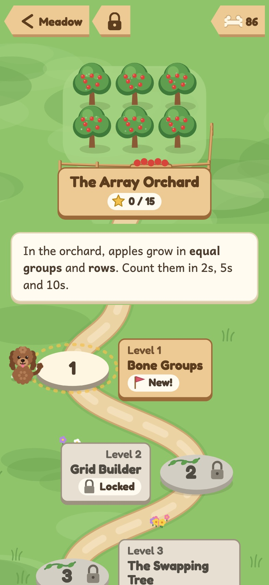
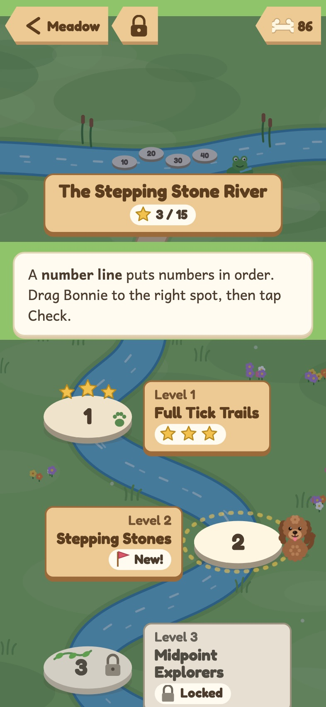
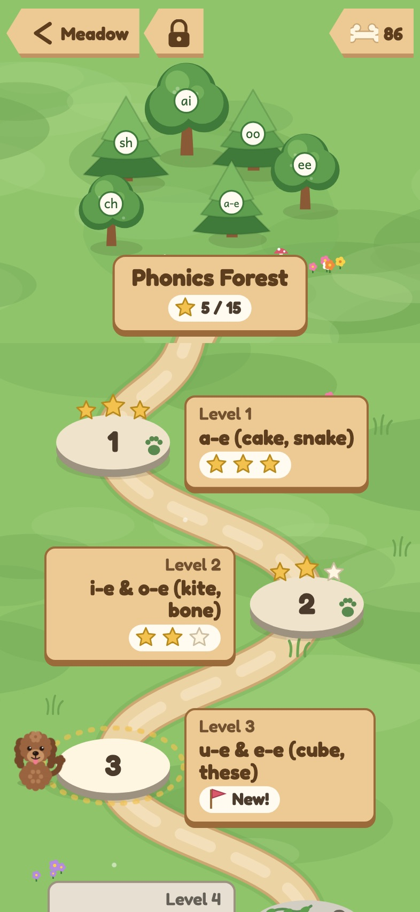
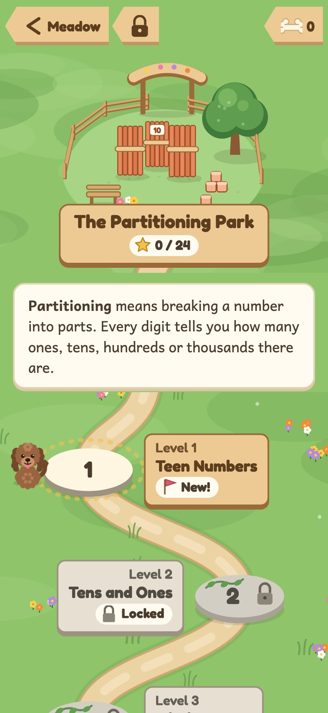
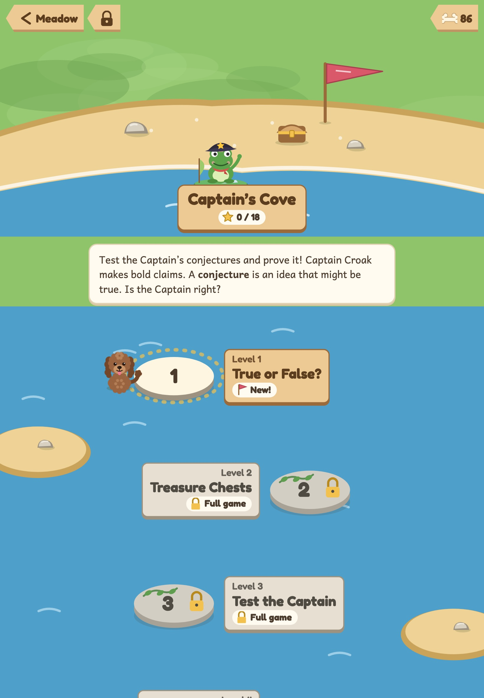

States and themes
All at iPhone size.
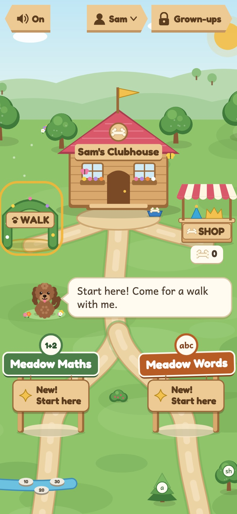
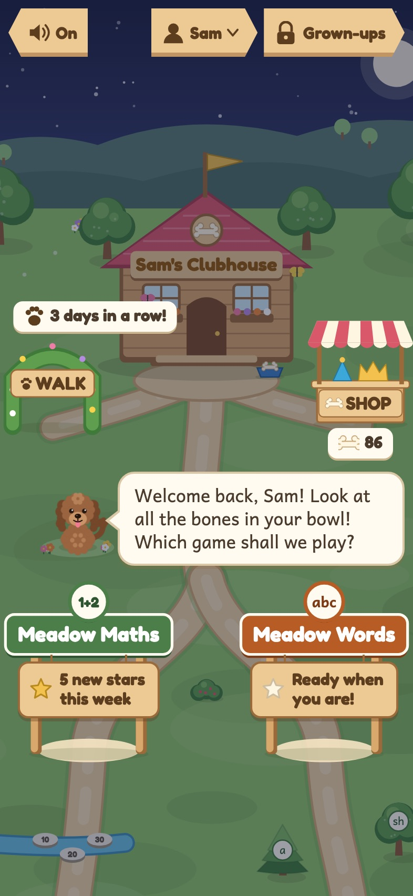


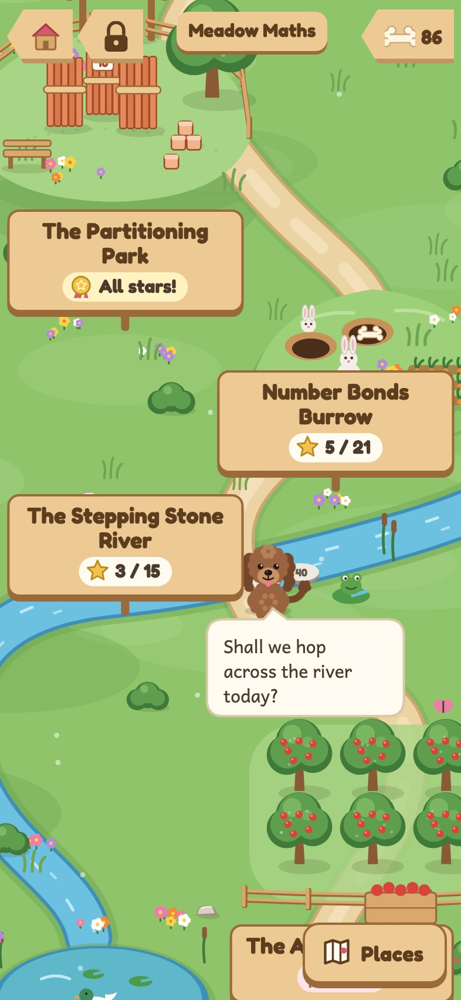

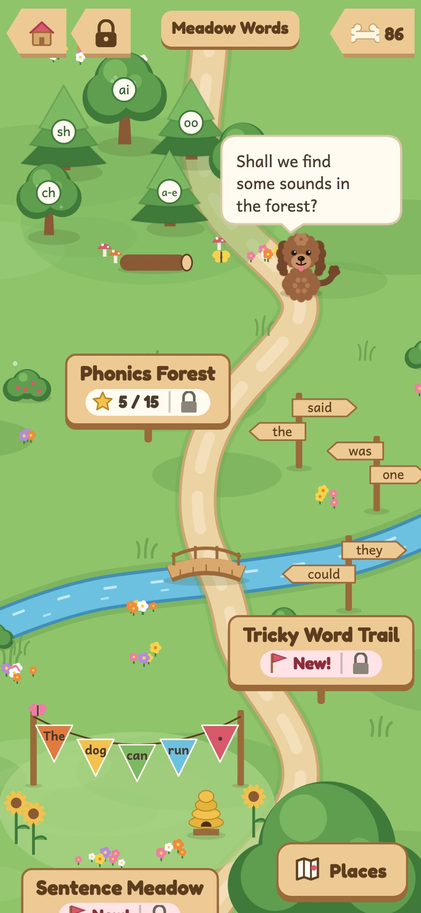

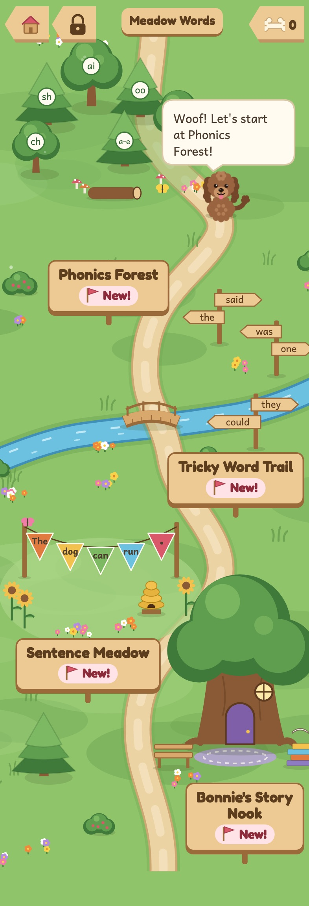
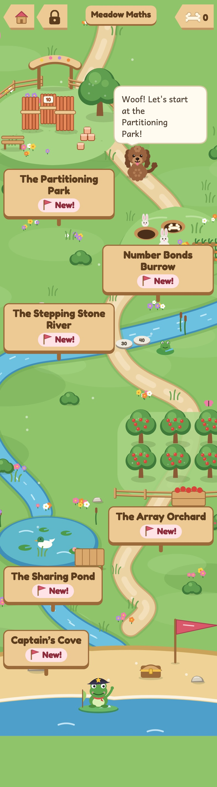
What was checked
| Check | How | Result |
|---|---|---|
| Clubhouse: 29 automatic checks (whole gate tappable, art inside its tap area, press feedback, progress wording, SE fit, Bonnie beside her words, house response, menus, sizes, speed) | iPhone SE, iPhone, iPhone Pro Max, iPad portrait (2 sizes) and landscape; Sam and a new player | 29 / 29 at every size |
| Maths map: 27 automatic checks (a place per world, generous tap areas, sign sizes, signs inside tap areas, nothing overlapping, Bonnie's bubble clear of every sign wherever she stands, padlocks, shorter trail, press feedback, "Places", the real level map and its unlocking, the way back) | The same 6 sizes; Sam, a new player, and the free app | All pass at every size and state |
| Words map: the same 27 checks as the Maths map | The same 6 sizes; Sam, a new player, and the free app. Also the walk from the Clubhouse's Words gate into the map and back, keeping the same pretend child | All pass at every size and state |
| Level maps: 18 automatic checks (a stone per level, each stone's state and VoiceOver name match the game's own list, generous tap rows, tags inside their rows and on screen, nothing overlapping, text sizes, Bonnie on a level you can play, press feedback, a locked level stays put, a full-game level opens the full-game box, an open level starts, the map comes back after, "Meadow" goes back) | The same 6 sizes, every Maths and Words place; Sam, a new player, the free app, and Reduce Motion | All pass at every size and state |
| Reduce Motion | Forced on in the browser: no hops, wags or blinks; taps still work | Pass |
| Keyboard | Real Tab presses through both screens, the name menu, and the "Places" list (Enter to choose, Escape to close) | Pass, after 2 fixes (below) |
| VoiceOver names | Every place reads its name and progress, e.g. "World 2: Number Bonds Burrow. Adding and taking away. 5 of 21 stars." | Checked in the accessibility tree |
| The family's save, purchases and players | No game file differs from the 1.1 branch. Loading both prototypes with pretend progress and tapping places left every real saved value unchanged. | Unaffected |
| Speed | The map draws about 2,200 shapes once, in roughly 20 ms on this Mac | Not yet timed on the 2018 iPad |
Fixed along the way: tabbing out of the name menu left it open; VoiceOver read "Is the Captain right?."; on the iPad the free-app padlock line made signs spill out of their tap areas, so the padlock now sits inside the star tag; Bonnie's bubble covered a sign at four places on small phones; phones and iPads could show an old cached copy of the prototype.
Compromises and open questions
- Not yet tried with real VoiceOver or on the 2018 iPad. Everything above ran in a browser. VoiceOver names and Reduce Motion are checked, but a real VoiceOver pass and a speed check on the old iPad still need doing by hand.
- "Start here", not "Start there". The brief said "Start there". I used "Start here" because it reads as Bonnie speaking from the gate. It's a one-word change if you prefer the other.
- The map's top buttons (home, grown-ups, bones) are still pictures without words. They have VoiceOver names and are 44 × 44 or more. The Clubhouse's buttons have words; the map's bar is narrower, so they were left as they are for this round.
- On the iPhone SE the feet of the two gates touch the bottom edge. Both gates and their star tags are fully visible and tappable, but there's no breathing room below them.
- The free-app padlock is now an icon inside the star tag rather than the words "Level 1 free" (those didn't fit on the iPad). VoiceOver still says "Level 1 is free to play", and the level map shows its padlocks as before.
- Bonnie's bubbles are narrower (three short lines at most) so they never cover a sign on small phones.
- Words map: on a phone, the edge of one signpost ("one") and the story nook's book pile are just cut off at the side. They're scenery, not something to tap; the iPad shows them whole. Its places' new Bonnie lines (e.g. "Shall we read the tricky signposts?") aren't recorded either.
- The "Places" button floats over the bottom corner of both maps, so as you scroll it sometimes sits over part of a sign for a moment. Both stay tappable.
- Bonnie's new lines aren't recorded. The website uses the device's voice for them; the app would be silent until they're recorded.
- Level maps: each level's one-line description (e.g. "Equal groups and adding again") is no longer on screen; VoiceOver still reads it. The tags have room for the number, name and stars only.
- Level maps: Bonnie speaks ("Level 2 next! Tap my stone.") but has no bubble there, because the gold ring already shows the way. Her new line isn't recorded.
- Level maps: the streak and shop buttons from the game's top bar are hidden on this screen, as on the meadow map; the bar shows Meadow, grown-ups and bones.
- The Sharing Pond's fraction levels are part of that pond's trail, as they are in the game's list now; they don't get a place of their own.
- Both prototypes are separate pages. Nothing has been put into the game; that waits for your approval.